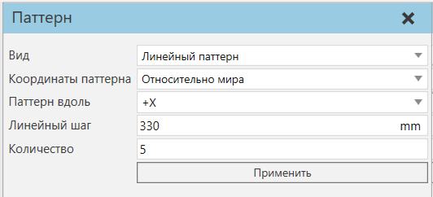
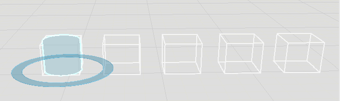

Создание паттерна компонентов |
|
Выбранные объекты в смоделированной среде можно клонировать для формирования углового или линейного паттерна компонентов. 1.В сцене выберите объект, который хотите клонировать. 2.На вкладке Главная в группе Инструменты щелкните Паттерн.  3.В панели задач Паттерна отредактируйте параметры для определения паттерна. Предварительный вид паттерна отображается с помощью ограничительных рамок. ·Чтобы клонировать компонент вдоль оси, выберите Режим - Линейный паттерн. Затем задайте ось - Паттерн вдоль. ·Чтобы клонировать компонент вокруг оси, выберите Режим - Угловой паттерн. Затем укажите ось для параметра Паттерн вокруг. Чтобы сместить ось детали, укажите Смещение вдоль на другую ось или вектор, а затем укажите Величину смещения или Вектор смещения. ·Определите угловой или линейный шаг между компонентами паттерна. ·Определите Количество как общее количество компонентов в паттерне.  4.Нажмите кнопку Применить. Паттерн компонентов создан, и все компоненты будут выбраны. 5.Нажмите Закрыть или создайте другой паттерн. Примечание: Если выбранный компонент присоединен к родителю, все клонированные компоненты также будут присоединены к тому же родителю. |